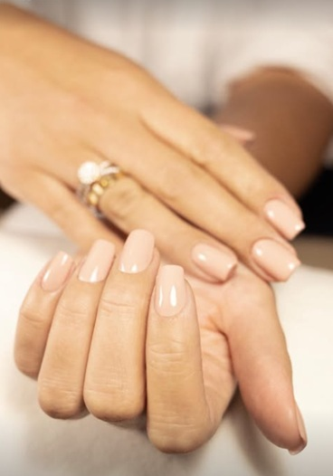
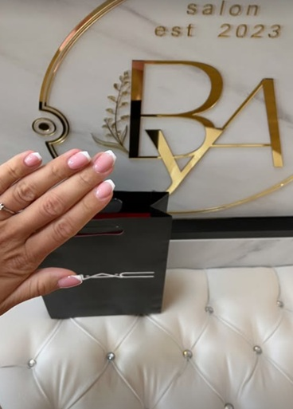
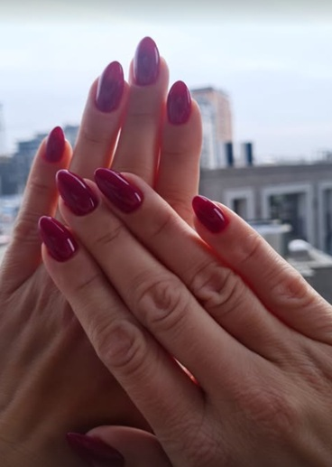
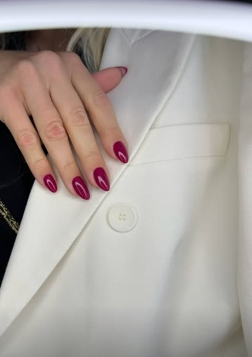
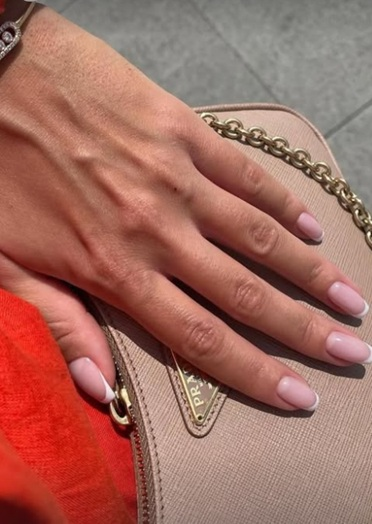
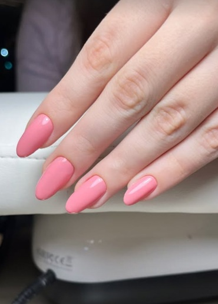
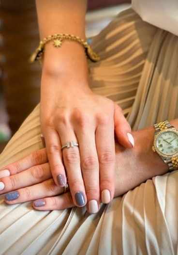
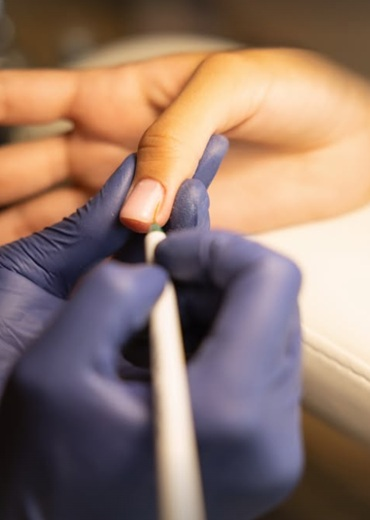

Usluga
U našem salonu pružamo vrhunsku uslugu koja obuhvata oblikovanje noktiju, izlivanje gelom za dugotrajni sjaj i jačinu, temeljnu obradu zanoktica za besprekorni izgled, kao i inovativni aparaturni manikir radi dubinskog čišćenja i revitalizacije kože oko noktiju. Naš tim posvećen je pružanju besprekornih rezultata i očaravajućeg izgleda vaših noktiju, uz korišćenje najkvalitetnijih proizvoda i tehnika u industriji kao i svih higijenske protokole kako bi osigurali sigurnost i zdravlje klijenata.
U našem salonu se možete prepustiti stručnjacima iz oblasti manikira i pedikira kroz različite tehnike obrade nokatne ploče i zanoktica. Gel lak je lepa opcija za ne tako agresivno obradjivanje nokatne ploče i prirodan izgled vaših noktiju. Ukoliko volite duge, graciozne nokte ili pak želite da od svojih kratkih, krhkih noktiju napravite elegantne duge nokte, onda je izlivanje noktiju gelom opcija za vas. Svim tehnikama smo jednako posvećeni i trudimo se da dobijemo maksimalan efekat.
Kod nas možete dobiti personalizovane usluge, uključujući savete o najboljim tretmanima za tip kože i noktiju klijenta. Redovan manikir u salonu ne samo da poboljšava estetski izgled, već i pomaže u održavanju zdravlja noktiju.
Gel lak za nokte je dugotrajan i izdržljiv premaz koji je popularan zbog svoje dugotrajnosti i otpornosti na oštećenja. Nanosi se slično kao običan lak, ali se suši pod UV ili LED lampom, što omogućava brže sušenje i veću izdržljivost. Gel lak traje od dve do četiri nedelje bez ljuštenja, krzanja ili pucanja, pružajući noktima sjajan i uredan izgled. Osim toga, gel lak jača nokte i štiti ih od lomljenja.
Gel lak je idealan za one koji žele dugotrajnu boju i negovane nokte uz minimalno održavanje. Uklanja se posebnim sredstvom koje ne oštećuje nokatnu ploču, što ga čini popularnim izborom u modernim salonima za negu noktiju.
Gel french manikir je elegantan i sofisticiran stil nege noktiju koji koristi gel tehniku za postizanje dugotrajne francuske manikure. Gel french manikir je elegantna i dugotrajna varijanta klasičnog frenča. Ovaj stil podrazumeva nanošenje prozirnog ili mlečnog gela na nokatnu ploču, dok se vrhovi noktiju ističu belim gelom za klasičan, čist izgled. Gel french je izuzetno postojan, traje nekoliko nedelja bez oštećenja, i pruža prirodan, ali uredan izgled noktiju. Idealan je za one koji preferiraju suptilnu, ali sofisticiranu manikuru.
Na vrhovima noktiju se nanosi beli gel, dok se ostatak nokta prekriva nežnim, prozirnim ili nude tonovima. Nakon nanošenja, gel se suši pod UV ili LED lampom, što osigurava trajnost i sjaj bez oštećenja. Ova tehnika je idealna za one koji žele uredan i negovan izgled noktiju koji traje nekoliko nedelja.
Rubber baza za nokte je specijalna fleksibilna i dugotrajna baza/podloga koja se koristi kao podloga u manikiru, posebno kod gel tehnika. Poznata je po svojoj izuzetnoj fleksibilnosti i otpornosti. Idealna je za slabe, lomljive ili oštećene nokte jer popunjava neravnine i jača nokatnu ploču, pružajući dugotrajnu postojanost manikira. Rubber baza se često koristi kao osnovni sloj pre nanošenja gel laka, nadogradnje ili drugih tehnika, čineći nokte glatkima i ujednačenima. Ova baza takođe pomaže u produžavanju trajnosti manikira, smanjujući mogućnost oštećenja i ljuštenja.
Ova baza pruža dodatnu čvrstinu i elastičnost, čineći nokte otpornijim na lomljenje i oštećenja. Zbog svoje gumaste teksture, rubber baza se savršeno prilagođava prirodnim noktima, popunjava neravnine i produžava trajnost manikira. Često se koristi kao osnova za gel lak ili nadogradnju noktiju, a preporučuje se za slabe i lomljive nokte.
Nadogradnja noktiju je popularna tehnika koja se koristi za produžavanje i oblikovanje prirodnih noktiju uz pomoć gelova, akrila ili tipseva. Ovaj postupak omogućava da se postigne željena dužina i oblik noktiju, što je idealno za one koji imaju krhke, kratke ili lomljive nokte. Nadograđeni nokti su dugotrajni, otporni na oštećenja i pružaju uredan i elegantan izgled. Tehnika nadogradnje može se prilagoditi različitim stilovima i ukrasima, poput nail art-a, kako bi se postigao personalizovan izgled. Redovno održavanje i korekcija su ključni za dugotrajnost i zdrav izgled nadograđenih noktiju.
Izlivanje noktiju gelom je popularna tehnika u manikiru koja omogućava produžavanje i oblikovanje prirodnih noktiju uz pomoć specijalnog gela. Ovaj postupak pruža čvrste i postojane nokte, idealne za osobe sa lomljivim ili slabim noktima. Gel se nanosi u slojevima preko prirodnih noktiju ili tipsi, a potom se suši pod UV ili LED lampom, čime se postiže dugotrajnost i otpornost na oštećenja. Izlivanje noktiju gelom pruža prirodan izgled i sjaj, dok omogućava razne stilove i ukrase, od klasičnih do modernih dizajna. Redovne korekcije su potrebne kako bi nokti ostali savršeni i negovani.
Ojačavanje noktiju gelom je postupak koji se koristi za jačanje prirodnih noktiju, čineći ih otpornijim na lomljenje i oštećenja. Gel se nanosi direktno na prirodne nokte u tankim slojevima i zatim se suši pod UV ili LED lampom, što im daje čvrstinu i dugotrajnost. Ovaj tretman je idealan za osobe sa slabim, tankim ili oštećenim noktima koje žele da ih ojačaju, a da pritom zadrže prirodan izgled. Gel ne samo da štiti nokte od svakodnevnih oštećenja, već omogućava i glatku, sjajnu površinu koja traje nedeljama. Redovno održavanje osigurava dugotrajne rezultate i zdravlje noktiju.
Korekcija noktiju je neophodan postupak za održavanje nadograđenih ili geliranih noktiju kako bi ostali uredni i dugotrajni. Tokom korekcije, uklanja se deo starog materijala, oblikuju se izrasli nokti, i nanosi se novi sloj gela, akrila ili drugog materijala. Ovaj proces pomaže u vraćanju noktima prvobitnog izgleda i sprečava oštećenja koja mogu nastati usled rasta prirodnih noktiju. Korekcija se preporučuje na svake dve do četiri nedelje, u zavisnosti od brzine rasta noktiju. Redovno održavanje produžava trajnost manikira i održava nokte zdravima i estetski privlačnima.
Trajni lak je revolucionarna tehnika u nezi noktiju koja omogućava dugotrajno postavljanje boje na noktima, obično do dve ili tri nedelje bez ljuštenja ili oštećenja. Ovaj lak se nanosi u nekoliko slojeva, a svaki sloj se suši pod UV ili LED lampom, čime se postiže izuzetna otpornost i sjaj. Trajni lak je idealan za užurbane osobe koje žele savršene nokte bez čestog korišćenja klasičnog laka za nokte. Osim što pruža dugotrajnu boju, trajni lak takođe jača nokte i pomaže u zaštiti od oštećenja. Uklanjanje trajnog laka zahteva poseban postupak kako bi se očuvala prirodna nokatna ploča.
Klasični manikir je osnovna tehnika nege noktiju koja uključuje oblikovanje, turpijanje, tretman zanoktica i lakiranje noktiju. Postupak obično počinje potapanjem ruku u toplu vodu kako bi koža omekšala, zatim se zanoktice blago potiskuju ili uklanjaju. Nokti se oblikuju turpijanjem u željeni oblik, a na kraju se nanosi lak po želji, uz dodatni zaštitni sloj za dugotrajnost. Ova vrsta manikira pruža uredan i negovan izgled ruku. Klasični manikir može biti osnova za nanošenje laka ili gel laka, ali i samostalno pruža negovan i prirodan izgled. Preporučuje se svima koji žele redovnu i temeljnu negu svojih ruku.
Lakiranje noktiju je popularna metoda koja omogućava dodavanje boje i sjaja noktima, čime se naglašava lični stil i estetika. Ovaj proces uključuje nanošenje sloja baze, zatim boje po izboru, i završno, sloja gornjeg laka za postizanje dugotrajnosti i zaštite. Lakovi za nokte dolaze u raznim teksturama, uključujući mat, sjajni i metalik, što pruža širok spektar opcija za svaku priliku. Redovno lakiranje noktiju može pomoći u održavanju zdravlja noktiju, ali je važno koristiti kvalitetne proizvode i izbegavati prekomerno lakiranje kako bi se očuvala prirodna nokatna ploča. Osim estetskog aspekta, lakiranje noktiju može biti i zabavna aktivnost koja omogućava kreativno izražavanje.
Winter nails su trend u nezi noktiju koji se odlično uklapa u zimske mesece, donoseći inspiraciju iz hladnog vremena i prazničnog duha. Ovi nokti obično uključuju zimske boje poput tamnoplave, ljubičaste, zlatne i srebrne, kao i klasičnu crvenu i belu boju. Često se koriste i ukrasi poput snežnih pahulja, zvezdica ili čak božićnih motiva, čime se dodatno naglašava sezonski duh. Winter nails mogu biti izvedeni u raznim tehnikama, uključujući gel, akril ili klasični lak, a dizajn može varirati od jednostavnog do vrlo sofisticiranog. Ovaj trend pruža savršen način da se iskažete tokom praznika i dodatno oplemenite svoj izgled.
Dečiji manikir je sve popularnija usluga koja omogućava deci da uživaju u nezi svojih noktiju na zabavan i kreativan način. Ovaj tretman obično uključuje oblikovanje noktiju, čišćenje zanoktica i nanošenje bezbednog, ekološki prihvatljivog laka u raznim bojama i dezenima. Dečiji manikir može uključivati i dodavanje šarenih nalepnica ili šljokica, čime se podstiče kreativnost i individualnost kod mališana.
Muški manikir se sve više prihvata kao deo lične nege i estetike. Ovaj tretman fokusira se na higijenu ruku i noktiju, oblikovanje i skraćivanje noktiju, kao i negu zanoktica. Muški manikir često uključuje i hidrataciju ruku, čime se poboljšava zdravlje kože. Ovaj pristup nezi noktiju pomaže muškarcima da izgledaju uredno i negovano, bez naglašavanja boja ili ukrasa, što ga čini praktičnim i sofisticiranim izborom.
Zanoktica je tanka koža koja okružuje nokat i igra važnu ulogu u zaštiti noktiju od bakterija i infekcija. Zdravlje zanoktica je ključno za očuvanje lepote i integriteta noktiju, jer su oštećene ili zanemarene zanoktice sklone upalama i iritacijama. Redovna nega zanoktica, koja uključuje hidrataciju i pažljivo uklanjanje viška kože, može doprineti zdravijem izgledu noktiju.
U nekim slučajevima, prekomerno oštećenje zanoktica može dovesti do problema kao što su bolne rane ili zadebljanje kože. Zbog toga je važno koristiti prave proizvode i tehnike prilikom nege ruku i noktiju.
Estetski manikir je sofisticirani tretman nege noktiju koji se fokusira na postizanje savršenog izgleda ruku i noktiju. Ovaj postupak obuhvata oblikovanje, poliranje i uklanjanje zanoktica, kao i hidrataciju kože ruku. Estetski manikir često uključuje upotrebu visokokvalitetnih lakova i gelova, što rezultira dugotrajnim i sjajnim noktima. Osim osnovnih koraka, ovaj tretman može uključivati i dodatne usluge poput masaže ruku ili primene hranljivih maski, čime se poboljšava zdravlje kože. Estetski manikir je savršen izbor za one koji žele da se osećaju posebno i negovano, bilo da se pripremaju za posebnu priliku ili jednostavno žele da priušte sebi malo opuštanja.
Spa manikir je luksuzni tretman koji pruža sveobuhvatnu negu ruku i noktiju, obogaćen dodatnim koracima za opuštanje i revitalizaciju. Ovaj postupak obuhvata klasične tehnike manikira, kao što su oblikovanje i čišćenje noktiju, ali uključuje i specijalizovane tretmane poput eksfolijacije, masaže ruku i hidratacije kože. Spa manikir često koristi aromaterapijske ulja i hranljive kreme, što dodatno poboljšava iskustvo opuštanja. Ovaj tretman ne samo da poboljšava izgled noktiju, već i doprinosi sveukupnom zdravlju i dobrobiti ruku. Idealno je rešenje za one koji žele da se opuste i uživaju u trenutku lične nege.
| Usluga | Cena |
|---|---|
| Manikir (aparaturni) | 2.500 din |
| Manikir + lakiranje | 2.800 din |
| Trajni lak | 3.500 din |
| Usluga | Cena |
|---|---|
| Skidanje trajnog laka + oblik | 2.000 din |
| Skidanje trajnog laka + manikir | 3.000 din |
| Skidanje gela + oblik | 2.500 din |
| Skidanje gela + manikir | 3.500 din |
| Opcija | S | M |
|---|---|---|
| Cover | 3.800 din | 4.000 din |
| Boja | 4.000 din | 4.200 din |
| Opcija | S | M |
|---|---|---|
| Cover | 4.000 din | 4.200 din |
| Boja | 4.200 din | 4.400 din |
| Opcija | S | M | L |
|---|---|---|---|
| Cover | 4.200 din | 4.400 din | 4.600 din |
| Boja | 4.400 din | 4.600 din | 4.800 din |
| Opcija | S | M | L |
|---|---|---|---|
| Cover | 4.700 din | 5.000 din | 5.300 din |
| Boja | 4.900 din | 5.200 din | 5.500 din |
Opcija "cover" podrazumeva nanošenje gela/rubber baze u boji po vašem izboru (poput podloge za french), bez mazanja gel laka.
| Dodatak | Cena |
|---|---|
| French | 700 din |
| Chrome | 700 din |
| Nail art (1 nokat) | 600–1.000 din |
| Nail art (ceo set) | 1.000–1.500 din |
| Spa dodatak (piling + masaža ruku) | 1.500 din |
Galerija








Pitanja
Gel manikir obično traje između dve i četiri nedelje bez ljuštenja i pucanja, u zavisnosti od nege i brzine rasta noktiju.
Da, nudimo i muški i dečiji manikir, prilagođen potrebama i higijenskim standardima za svaki uzrast.
Nalazimo se na Bežanijskoj Kosi u Beogradu. Tačnu adresu i uputstvo kako do nas možete dobiti preko Instagrama ili mejla.
Najbrži način je poruka na Instagramu (@beauty.ambassade.salon) ili mejl na beauty.ambassade.salon@gmail.com.